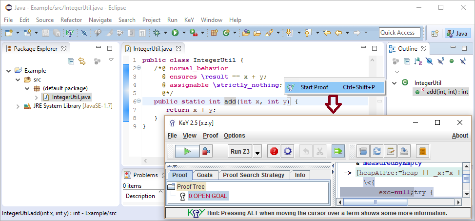
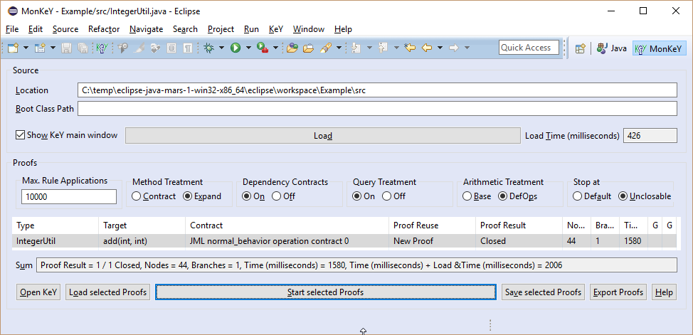
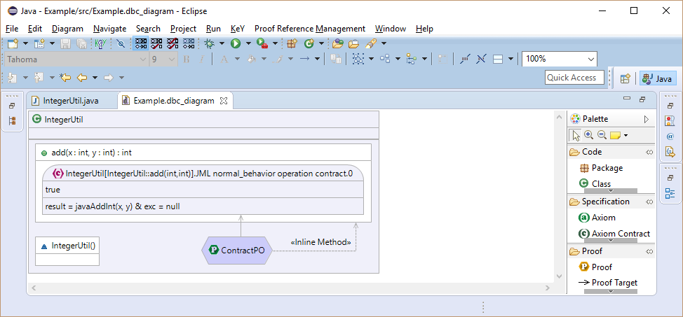
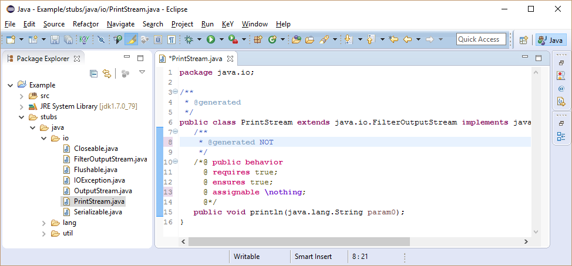

")
The Symbolic Execution Debugger (SED) is a debugger based on symbolic execution which allows to discover all possible execution paths simultaneously. This is achieved by the use of symbolic in lieu of concrete values resulting in a symbolic execution tree. Each node in the symbolic execution tree provides the full state and related information such as the symbolic call stack or the path conditions under which the node is reached.
The following screenshot gives an impression of how the tool looks like. More details including download instructions and a user guide are available on the Symbolic Execution Debugger website.
KeY Resources provides the "KeY project" with automatic background proofs. Such projects extends the functionality of a Java project by maintaining automatically proofs in background. This means that the tool tries to do proofs automatically whenever files in a project change. Markers are used to show the proof result directly in the source editor.
The following screenshot gives an impression of how the tool looks like. More details including download instructions and a user guide are available on the KeY Resources website.

JML Editing extends the Java development tools (JDT) with support for JML to make writing JML specifications as convenient as writing Java source code.
The following screenshot gives an impression of how the tool looks like. More details including download instructions are available on the JML Editing website.

KeY 4 Eclipse Starter is a basic Eclipse extension to start KeY from within Eclipse.
The following screenshot gives an impression of how the tool looks like. More details including download instructions and a user guide are available on the KeY 4 Eclipse Starter website.
KeYIDE is an alternative user interface for KeY directly integrated into Eclipse. The goal of this project is to provide the same functionality as the original user interface of KeY. Up to now only the basics (proof tree navigation, auto mode, interactive rule application) are available.
The following screenshot gives an impression of how the tool looks like. More details including download instructions and a user guide are available on the KeYIDE website.

MonKeY provides a batch verification of all proof obligations. This means that the tool lists all proof obligations provided by the source code and allows to prove them in a batch. Statistics such as the used time or the complexity of proofs are also provided.
The following screenshot gives an impression of how the tool looks like. More details including download instructions and a user guide are available on the MonKeY website.
Visual DbC is a proof management and visualization tool. It allows to visualize code members (e.g. types, attributes, methods) together with specifications (e.g. method contracts, invariants) and proofs in a DbC diagram similar to an UML class diagram. Proof references are used to indicate that a code member or a specification is used by a proof.
The following screenshot gives an impression of how the tool looks like. More details including download instructions and a user guide are available on the VisualDbC website.
Stubby allows to generate stubs annotated with default JML specifications for used API members.
The following screenshot gives an impression of how generated stub files look like. More details including download instructions and a user guide are available on the Stubby website.
